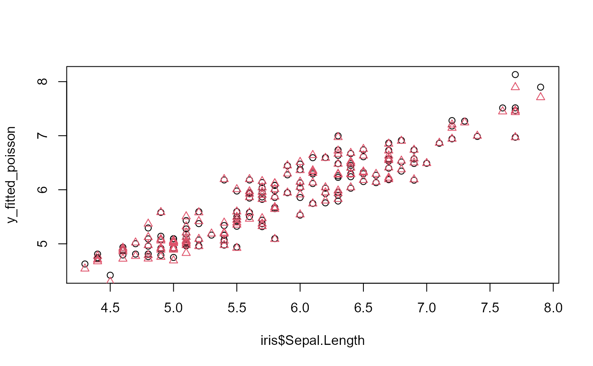

fixest fitfitted.fixest.RdThis function extracts the fitted values from a model estimated with femlm, feols or feglm. The fitted values that are returned are the expected predictor.
# S3 method for fixest fitted(object, type = c("response", "link"), ...) # S3 method for values.fixest fitted(object, type = c("response", "link"), ...)
| object | A |
|---|---|
| type | Character either equal to |
| ... | Not currently used. |
It returns a numeric vector of length the number of observations used to estimate the model.
If type = "response", the value returned is the expected predictor, i.e. the expected value of the dependent variable for the fitted model: \(E(Y|X)\).
If type = "link", the value returned is the linear predictor of the fitted model, that is \(X\cdot \beta\) (remind that \(E(Y|X) = f(X\cdot \beta)\)).
This function returns the expected predictor of a fixest fit. The likelihood functions are detailed in femlm help page.
See also the main estimation functions femlm, feols or feglm. resid.fixest, predict.fixest, summary.fixest, vcov.fixest, fixef.fixest.
# simple estimation on iris data, clustering by "Species" res_poisson = femlm(Sepal.Length ~ Sepal.Width + Petal.Length + Petal.Width | Species, iris) # we extract the fitted values y_fitted_poisson = fitted(res_poisson) # Same estimation but in OLS (Gaussian family) res_gaussian = femlm(Sepal.Length ~ Sepal.Width + Petal.Length + Petal.Width | Species, iris, family = "gaussian") y_fitted_gaussian = fitted(res_gaussian) # comparison of the fit for the two families plot(iris$Sepal.Length, y_fitted_poisson)